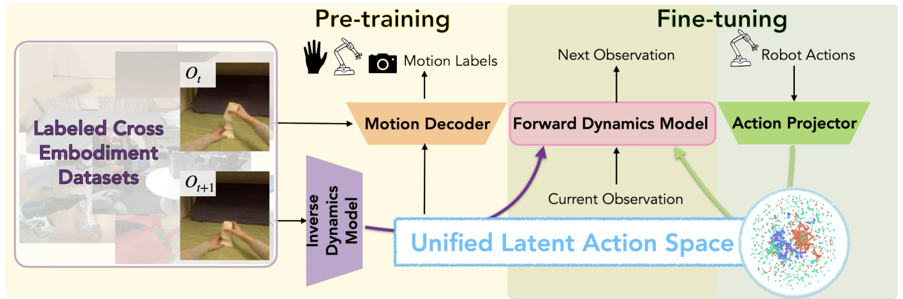
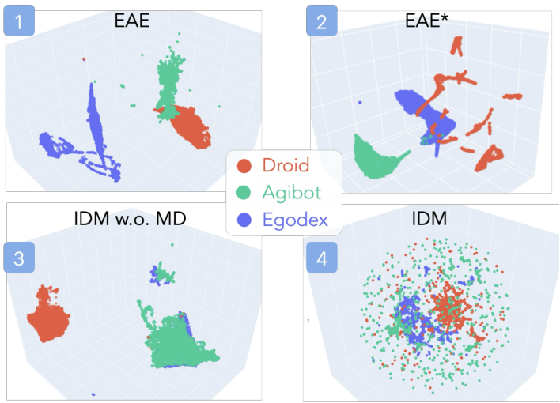

Inverse dynamics model
An inverse dynamics model encodes consecutive observations into a continuous latent action.
ICML 2026
LAC-WM learns a unified latent action space from human and robot data for cross-embodiment world modeling and planning.
Stanford University · Work partially done at Meta FAIR Robotics
Robot embodiments have different action spaces, making it difficult to train world models on heterogeneous data. We introduce the Latent Action-Conditioned Robot World Model (LAC-WM), which learns a shared action representation from visual transitions with auxiliary motion supervision. After pretraining on EgoDex, Agibot, and Droid, an action projector adapts the model to an unseen robot embodiment. Compared with explicit action conditioning (EAC-WM), LAC-WM improves downstream planning performance on dexterous manipulation and modified LIBERO tasks. Its performance also improves as the number of pretraining embodiments increases.
LAC-WM combines an inverse dynamics model, a forward dynamics model, a motion decoder, and an action projector.

An inverse dynamics model encodes consecutive observations into a continuous latent action.
A motion decoder reconstructs motion labels, while cross-augmentation discourages visual shortcuts.
An action projector maps raw actions from an unseen robot into the shared space for imagined rollouts.
The world model ranks candidate actions sampled by a vision-language-action policy.
Unseen objects & locations
Average task success (%)
125 episodes across five unseen task variants. All methods use the same π₀.₅ backbone. Axis: 74–100%.
Unseen instances & categories
Average task success (%)
Bimanual Franka with Allegro hands. Table 2 means across three seeds, averaged over both splits. Axis: 10–25%.
Values reproduced from Tables 2 and 4. Both bar charts use truncated y-axes; labels show the reported absolute success rates. LIBERO gain is measured against EAC-WM.
| Task | VLA-random | VLA-mean | EAC-WM | LAC-WM |
|---|---|---|---|---|
| Book | 76 | 76 | 80 | 92 |
| White bowl | 76 | 92 | 92 | 96 |
| Wine bottle | 72 | 84 | 84 | 96 |
| Alphabet soup | 80 | 72 | 80 | 88 |
| Salad dressing | 68 | 84 | 76 | 88 |
| Average | 74.4 | 81.6 | 82.4 | 92.0 |
Explicit action encoders separate embeddings by dataset. LAC-WM’s inverse dynamics model, trained with motion decoding, shows stronger alignment across Droid, Agibot, and EgoDex.
The learned latent actions can be transferred between humans and robots. In the scaling experiments, LAC-WM improves with additional pretraining embodiments, whereas EAC-WM performance decreases.

Action selection using LAC-WM and EAC-WM on the same tasks. In these examples, LAC-WM lifts the object while EAC-WM fails to grasp it.
Grasps and lifts the object.
Retracts without lifting the object.
The reference motion comes from one embodiment; EAC-WM and LAC-WM predict future frames for another embodiment.